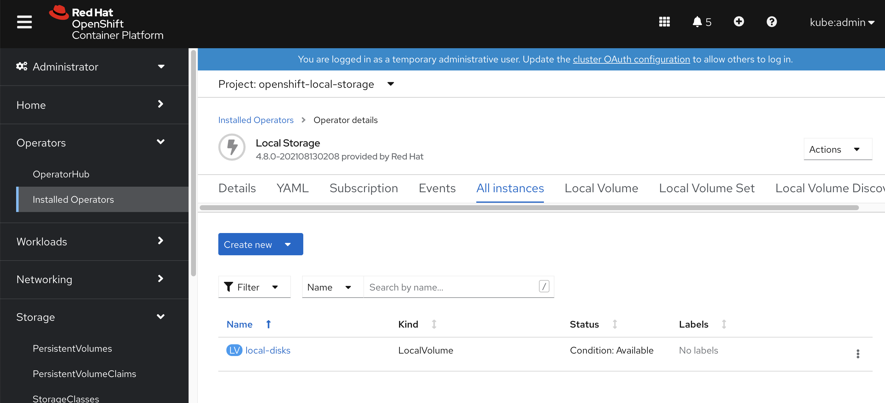
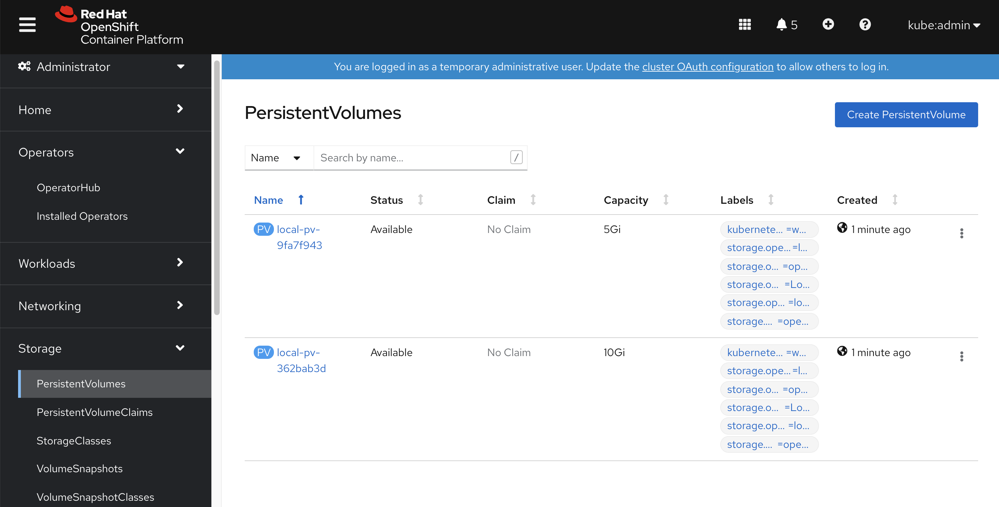
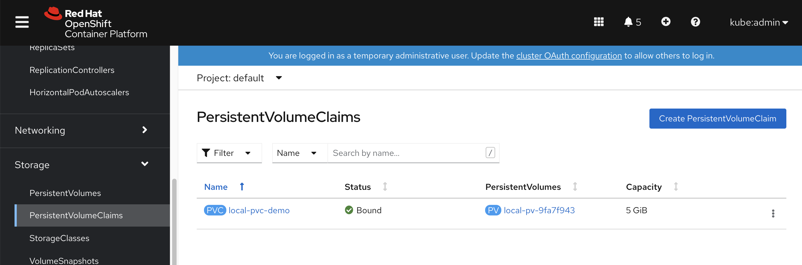
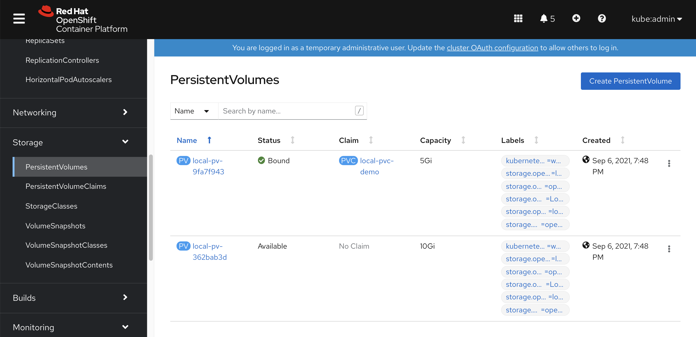
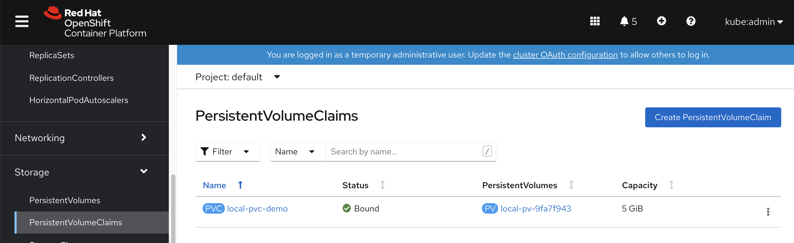
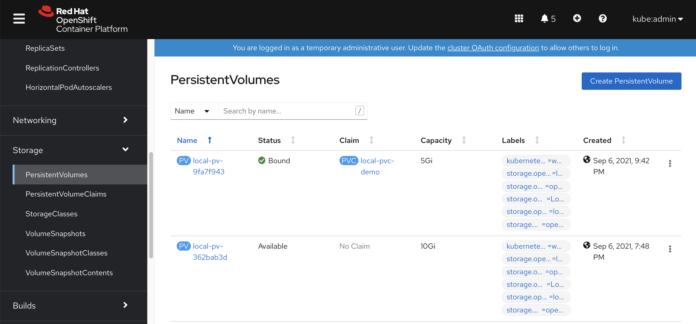

openshift4 缩小 / & sysroot 分区大小
openshift4默认安装的时候，会把sda/vda整个硬盘占满，如果我们是baremetal按照，一般会配置SSD/NVME, 1T大小，这样非常浪费。我们完全可以把硬盘空间节省下来，分一些分区，给local storage operator用。
视频讲解:
# backup the ignition file you want
/bin/cp -f /var/www/html/ignition/worker-1.ign /var/www/html/ignition/worker-1.ign.bak
# 修改 /data/ocp4/partition.sh ，
# 主要是修改里面的root分区大小，默认是200G
# 然后是想要创建的数据分区的个数和大小参数，
# 默认会创建5个10G分区，5个5G分区。
bash /data/ocp4/partition.sh
butane /data/ocp4/root-partition.bu -r -o /data/install/partition-ric.ign
/bin/cp -f /var/www/html/ignition/worker-1.ign.bak /var/www/html/ignition/worker-1.ign
# merge the 2 ignition files
jq -s '.[0] * .[1]' /var/www/html/ignition/worker-1.ign /data/install/partition-ric.ign | jq -c . > /var/www/html/ignition/worker-1.ign.new
/bin/cp -f /var/www/html/ignition/worker-1.ign.new /var/www/html/ignition/worker-1.ign
# then install using iso
# login to worker-1
lsblk
# NAME MAJ:MIN RM SIZE RO TYPE MOUNTPOINT
# sr0 11:0 1 1024M 0 rom
# vda 252:0 0 1T 0 disk
# ├─vda1 252:1 0 1M 0 part
# ├─vda2 252:2 0 127M 0 part
# ├─vda3 252:3 0 384M 0 part /boot
# ├─vda4 252:4 0 200G 0 part /sysroot
# ├─vda5 252:5 0 10G 0 part
# ├─vda6 252:6 0 10G 0 part
# ├─vda7 252:7 0 10G 0 part
# ├─vda8 252:8 0 10G 0 part
# ├─vda9 252:9 0 10G 0 part
# ├─vda10 252:10 0 5G 0 part
# ├─vda11 252:11 0 5G 0 part
# ├─vda12 252:12 0 5G 0 part
# ├─vda13 252:13 0 5G 0 part
# └─vda14 252:14 0 5G 0 part /var/lib/kubelet/pods/a364c83a-deae-4431-b7c3-bcef8457aed6/volumes/kubernetes.io~local-volume/local-pv-9fa7f
# let's check what we created
cat /data/ocp4/root-partition.bu
# variant: openshift
# version: 4.8.0
# metadata:
# name: root-storage
# labels:
# machineconfiguration.openshift.io/role: worker
# storage:
# disks:
# - device: /dev/vda
# wipe_table: false
# partitions:
# - number: 4
# label: root
# size_mib: 204800
# resize: true
# - label: data_10G_1
# size_mib: 10240
# - label: data_10G_2
# size_mib: 10240
# - label: data_10G_3
# size_mib: 10240
# - label: data_10G_4
# size_mib: 10240
# - label: data_10G_5
# size_mib: 10240
# - label: data_5G_1
# size_mib: 5120
# - label: data_5G_2
# size_mib: 5120
# - label: data_5G_3
# size_mib: 5120
# - label: data_5G_4
# size_mib: 5120
# - label: data_5G_5
# size_mib: 5120
cat /data/install/partition-ric.ign | jq .
# {
# "ignition": {
# "version": "3.2.0"
# },
# "storage": {
# "disks": [
# {
# "device": "/dev/vda",
# "partitions": [
# {
# "label": "root",
# "number": 4,
# "resize": true,
# "sizeMiB": 204800
# },
# {
# "label": "data_10G_1",
# "sizeMiB": 10240
# },
# {
# "label": "data_10G_2",
# "sizeMiB": 10240
# },
# {
# "label": "data_10G_3",
# "sizeMiB": 10240
# },
# {
# "label": "data_10G_4",
# "sizeMiB": 10240
# },
# {
# "label": "data_10G_5",
# "sizeMiB": 10240
# },
# {
# "label": "data_5G_1",
# "sizeMiB": 5120
# },
# {
# "label": "data_5G_2",
# "sizeMiB": 5120
# },
# {
# "label": "data_5G_3",
# "sizeMiB": 5120
# },
# {
# "label": "data_5G_4",
# "sizeMiB": 5120
# },
# {
# "label": "data_5G_5",
# "sizeMiB": 5120
# }
# ],
# "wipeTable": false
# }
# ]
# }
# }local storage operator
我们有了很多分区，那么赶快来测试一下如何把他们变成 PV 吧
apiVersion: "local.storage.openshift.io/v1"
kind: "LocalVolume"
metadata:
name: "local-disks"
namespace: "openshift-local-storage"
spec:
nodeSelector:
nodeSelectorTerms:
- matchExpressions:
- key: kubernetes.io/hostname
operator: In
values:
- worker-1
storageClassDevices:
- storageClassName: "local-sc"
volumeMode: Filesystem
fsType: xfs
devicePaths:
- /dev/vda5
- /dev/vda14我们可以看到配置已经生效

系统已经帮我们创建好了PV
我们创建pod，创建和使用pvc，然后弄点数据，然后删掉pod，删掉pvc。然后重新创建pod，创建和使用pvc，看看里面的数据是否会清空。
cat << EOF >> /data/install/pvc-demo.yaml
---
kind: PersistentVolumeClaim
apiVersion: v1
metadata:
name: local-pvc-demo
spec:
accessModes:
- ReadWriteOnce
volumeMode: Filesystem
resources:
requests:
storage: 2Gi
storageClassName: local-sc
---
kind: Pod
apiVersion: v1
metadata:
annotations:
name: demo1
spec:
nodeSelector:
kubernetes.io/hostname: 'worker-1'
restartPolicy: Always
containers:
- name: demo1
image: >-
quay.io/wangzheng422/qimgs:centos7-test
env:
- name: key
value: value
command:
- sleep
- infinity
imagePullPolicy: Always
volumeMounts:
- mountPath: /data
name: demo
readOnly: false
volumes:
- name: demo
persistentVolumeClaim:
claimName: local-pvc-demo
EOF
oc create -n default -f /data/install/pvc-demo.yaml我们能看到 PVC 已经创建

PV 也已经挂载
oc rsh pod/demo1
df -h
# Filesystem Size Used Avail Use% Mounted on
# overlay 200G 8.4G 192G 5% /
# tmpfs 64M 0 64M 0% /dev
# tmpfs 24G 0 24G 0% /sys/fs/cgroup
# shm 64M 0 64M 0% /dev/shm
# tmpfs 24G 64M 24G 1% /etc/hostname
# /dev/vda14 5.0G 68M 5.0G 2% /data
# /dev/vda4 200G 8.4G 192G 5% /etc/hosts
# tmpfs 24G 20K 24G 1% /run/secrets/kubernetes.io/serviceaccount
# tmpfs 24G 0 24G 0% /proc/acpi
# tmpfs 24G 0 24G 0% /proc/scsi
# tmpfs 24G 0 24G 0% /sys/firmware
echo wzh > /data/1
cat /data/1
# wzh
# destroy the pvc and pod
oc delete -n default -f /data/install/pvc-demo.yaml
# recreate
oc create -n default -f /data/install/pvc-demo.yamlPVC重新创建了

PV也重新挂在了
我们发现，PV release以后，重新挂载，之前的存储内容，就都没有了。
oc rsh pod/demo1
sh-4.2# cd /data
sh-4.2# ls
sh-4.2# ls -hl
total 0